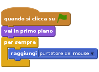
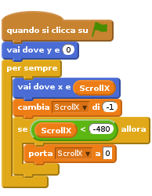
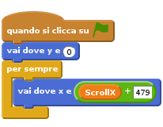
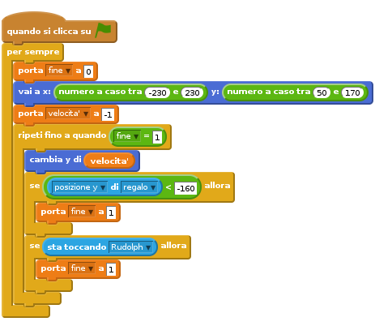
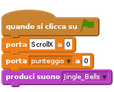
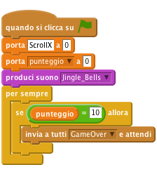
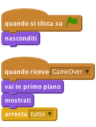

Introduzione
In questo progetto creiamo un gioco con uno sfondo scorrevole, con un punteggio e con una schermata di Game Over
Un incidente in una fabbrica di giocattoli ha scagliato moltissimi regali nel cielo, aiuta la renna Rudolph a recuperare quanti piu’ regali di Natale possibile!

Passo 1: Fai volare Rudolph
Lista delle Attivita’
- Crea un nuovo progetto Scratch. Rimuovi il gatto Felix con click-destro e seleziona cancella.
- Sostituisci lo sfondo con SfondoCielo.png dalla cartella Resources
- Aggiungi lo sprite di Rudolph (usa Rudolph.png dalla cartella Resources)
Aggiungi questo script per far si’ che Rudolph segua il mouse:

Verifica il tuo progetto
Fai click sulla bandierina verde e muovi il mouse
- Vedi Rudolph inseguire il mouse?
Salva il tuo progetto
- Per rendere il gioco piu’ interessante aggiungiamo uno sfondo scorrevole di colline innevate. Cosi’ sembrera’ che Rudolph stia volando. Aggiungi un nuovo sprite (usa CollineNeve.png dalla cartella Resources)
- Chiama lo sprite
neve1 - Crea una nuova variabile, per tutti gli sprite, facendo click su
Variabili e Listee poi suCrea una Variabile. ChiamalaScrollX. Rimuovi il segno di spunta in modo che la variabile non appaia sullo stage. Questa variabile verra’ usata per controllare come si muovono le colline Aggiungi questo script per lo sprite
neve1:
Verifica il tuo progetto
Fai click sulla bandierina verde
- Le colline si muovono?
- Cosa succede mentre le colline si muovono verso un’estremita’ dello schermo?
Salva il tuo progetto
- Risolviamo il problema aggiungendo delle altre colline allo stage. Fai click su
Carica uno sprite da un filee seleziona CollineNeve.png dalla cartella Resources - Chiamalo
neve2 Aggiungi queso script allo sprite
neve2per far si’ che le colline scorrano in modo omogeneo:
Verifica il tuo progetto
Fai click sulla bandierina verde
- Le colline si muovono?
- Il problema di prima e’ stato risolte?
Salva il tuo progetto
Passo 2: Regali cadenti
Lista delle Attivita’
- Adesso aggiungiamo i regali che Rudolph deve raccogliere. Aggiungi uno sprite da un file e usa regalo.png dalla cartella Resources
- Crea una nuova variabile solo per questo sprite e chiamala
fine. Fai in modo che la variabile non appaia sullo stage. Useremo questa variabile per decidere quando il regalo dovra’ essere rimosso dallo schermo - Crea un’altra variabile solo per questo sprite e chiamala
velocita'. Fai in modo che la variabile non appaia sullo stage. Useremo questa variabile per controllare la velocita’ con cui i regali cadranno dal cielo - Aggiungi questi script per lo sprite regalo per farlo cadere dal cielo. Nota che useremo il blocco
numero a casoper far apparire i regali in punti differenti del cielo. Tramite il blocco
sta toccando [Rudolph]possiamo capire quando il regalo e’ stato raccolto e farlo scomparire. In modo simile possiamo anche incrementare il punteggio.
Verifica il tuo progetto
Fai click sulla bandierina verde
- I regali cadono dal cielo?
- Scompaiono quando Rudolph li raccoglie o quando toccalo terra?
Salva il tuo progetto
- Rendiamoil gioco piu’ interessante cambiando il colore dei regali ogni volta che cadono dal cielo. Fai questo usando il blocco
cambia effetto [colore v] Fai cadere i regali a velocita’ diverse cambiando il blocco
porta velocita a -1con il blocconumero a caso. Prova diversi valori per esempio tra -10 e -1. Lo script deve essere come questo![quando si clicca su @
per sempre
porta [fine v] a [0]
vai a x: <numero a caso tra (-230) e (230)> y: <numero a caso tra (50) e (170)>
cambia effetto [colore v] di (numero a caso tra (1) e (100))
porta [velocita' v] a (numero a caso tra (-10) e (-1))
ripeti fino a quando <[fine v] = [1]>
cambia y di (velocita')
se <([posizione y v] di [regalo v]) < [-160]> allora
porta [fine v] a [1]
fine
se <sta toccando [Rudolph v]> allora
porta [fine v] a [1]
fine](5e19cab33a16e5c1c61dcd2276577b715004596f.png)
Verifica il tuo progetto
Fai click sulla bandierina verde
- I regali cadono dal cielo a diverse velocita’ e con colori diversi?
Salva il tuo progetto
Passo 3: Punteggio ed effetti sonori
Lista delle Attivita’
- Modifichiamo il nostro script in modo da tenere un punteggio. Questo verra’ poi usato dopo per capire quando il gioco e’ finito e’ visuallizare la schermata di Game Over
- Crea una nuova variabile per tutti gli sprite chiamala
punteggio. Fai in modo che questa variabile appaia sullo stage. Cambia lo script per ilr egalo in questo modo. Nota che abbiamo aggiungo un effetto sonoro con il blocco
suona tamburoe anche incrementato il punteggio della partita con il bloccocambia [punteggio ] di 1![quando si clicca su @
per sempre
porta [fine v] a [0]
vai a x: <numero a caso tra (-230) e (230)> y: <numero a caso tra (50) e (170)>
cambia effetto [colore v] di (numero a caso tra (1) e (100))
porta [velocita' v] a (numero a caso tra (-10) e (-1))
ripeti fino a quando <[fine v] = [1]>
cambia y di (velocita')
se <([posizione y v] di [regalo v]) < [-160]> allora
suona tamburo [57 v] per (0,2) battute
porta [fine v] a [1]
fine
se <sta toccando [Rudolph v]> allora
suona tamburo [39 v] per (+2) battute
porta [fine v] a [1]
cambia [punteggio v] di [1]
fine](39b47839b605a90b8fa9071defb7bb034384a4e9.png)
Aggiungiamo un po’ di musica al gioco:
Seleziona lo stage. Carica un suono da un file ed usa Jingle_Bells.mp3 dalla cartella Resources

Crea questo script per lo stage. Il punteggio sara’ inizializzato a 0 all’inizio del gioco e Jingle Bells sara’ suonato durante lo svolgimento del gioco.
Nota che se la musica non viene riprodott correttamente devi salvare il tuo progetto, chudere Scratch e riaprire il progetto.
Verifica il tuo progetto
Fai click sulla bandierina verde
- Vedi il punteggio cambiare qundo Rudolph raccoglie un regalo?
Salva il tuo progetto
Passo 4: Game over
- Cambiamo lo script in modo da considerare il punteggio della partita.Possiamo usarlo poi dopo per determinare quando visualizzare la schermata di Game Over
Cambia lo script per lo stage in modo che quando
punteggioraggiunge il valore di 10 un messaggio {.blockyellow} di GameOver venga inviato.
- Adesso dobbiamo aggiungere la schermata Game Over. Aggiungi uno sprite da file e usa GameOver.png dalla cartella Resources
Aggiungi questo script per lo sprite GameOver. La schermata verra’ nascosta, all’inizio del gioco, con il blocco
nasconditie verra’ visualizzata, con il bloccomostratiquando il messaggioGameOversara’ ricevuto.
Verifica il tuo progetto
Fai click sulla bandierina verde
- Vedi il punteggio cambiare qundo Rudolph raccoglie un regalo?
Salva il tuo progetto
Sfida: Rendi il gioco piu’ difficile
- Puoi far oscillare il regalo mentre cade dal cielo?
- Puoi far cadere piu’ di un regalo alla volta?
- Fai apparire il messaggio di Game Over dopo aver raccolto 20 regali
- Puoi ridurre il punteggio di 1 quando Rudolph non riesce a raccogliere un regalo e cade per terra?
Salva il tuo progetto
Ben fatto!!! Hai finito con questo esercizio. Adesso divertiti con il tuo nuovo gioco!!!
Ehi, non dimenticare che puoi condividere il tuo gioco con tutti i tuoi amici e familiari. Basta che fai selezioni il menu File e poi Share to website!!